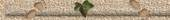

|
|
|
Alte Muldebrücke
Blick auf die Burg Düben
Schiffsmühle
Burgwächterhaus
Muldeblick
alte Post
Burg Bad Düben
Muldebrücke
Altes Rathaus
Schiffsmühle |
926
Heinrich I. baut die vorhandenen Befestigungen entlang der Mulde
981 wurde die Burg erstmals urkundlich erwähnt. Erzbischof von Mag- 1226 wird erstmals die Brücke über die Mulde erwähnt 1519 führt Martin Luther die Reformation in Düben ein 1532
Junkers Günther von Zaschnitz überfällt Hans Kohlhaas bei Wel- 1557 wird das Alaunwerk erstmals urkundlich erwähnt 1577 wütet
die Pest in der Stadt - das Pesttor am Friedhof zeugt noch 1631
schließen Gustav Adolf von Schweden und Johann Georg von 1716
fielen das Rathaus und viele Wohnhäuser dem großen Brand zum
1760
errichtet Friedrich II. vor der
Schlacht bei Torgau (Süptitzer Höhen)
1809
Einsturz des Turmes der um 1200
ursprünglich erbauten Nikolai-
1813
während der Befreiungskriege
errichtete Blücher im Neuhof sein 1815 Düben wir auf Beschluss des Wiener Kongresses preußisch
1846
konnte einer der ersten
bürgerlichen Parks- und Kurparks besich- 1849 eröffnet die erste Darlehenskasse Deutschlands in Düben 1872 Ottos Glaceederfabrik an der Mulde errichtet 1874 Eingemeindung des Neuhofes
1895
Düben erhält Bahnanschluss,
02.10.1895 Inbetriebnahme der Eisen- 1915 kann das Moorbad seine ersten Gäste begrüßen 1943 Errichtung des Waldkrankenhauses im Ortsteil Hammermühle. 1943
Verlagerung der Firma "PW Maschinen- und Apparatebau" nach
1945
bevor der Einmarsch der Amerikaner
erfolgt, wird im April die 1948 wird
der Stadt Düben der Titel „Bad“ verliehen, es ist auf das Vor-
1950-53
wird auf der Burg Düben das
Landschaftsmuseum „Dübener
1959
wird die erste stählerne
Muldebrücke nach dem Krieg eingeweiht,
1990
Volksabstimmung mit mehrheitlichem
Ergebnis: Bad Düben gehört
1992
wird am 2. Oktober der
Heimatverein gegründet
1995
die neue Muldebrücke wird im
Rahmen des Ausbaus der B2 
|